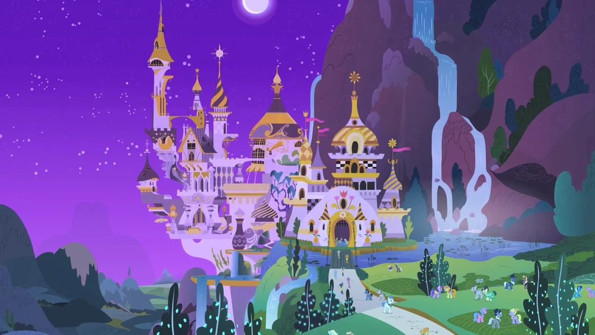
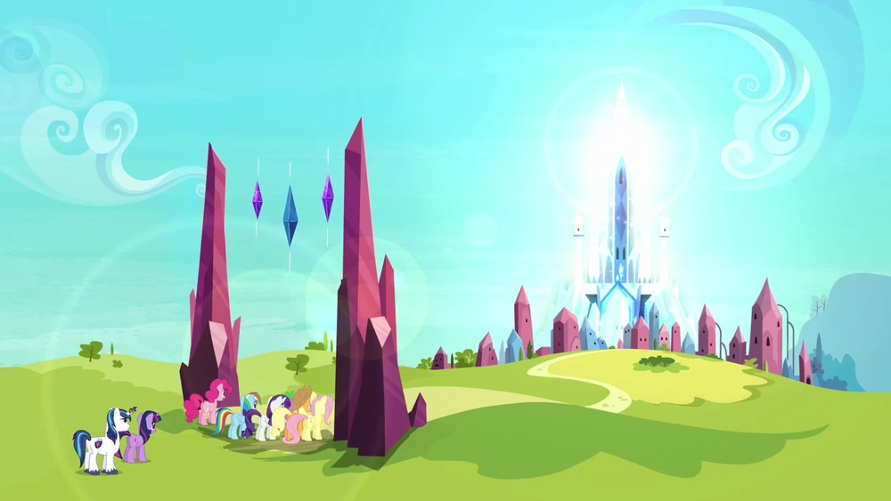

En Equestria figuran varios lugares, como Ponyville, Canterlot, el Imperio de Cristal, y otros lugares. Las ubicaciones exactas en Equestria no están claramente definidas. Las principales ubicaciones son:

- Ponyville.
- Canterlot.
- Cloudsdale.
- Imperio de Cristal.
- Ponyhattan.
- Appleloosa.
- Dodge Junction.
- Rainbow Falls.
- Yeguadelphia.
- Trottingham.
- Las Pegasus.
- Applewood.
- Balticrin.
- Montañas Nebulosas.
- Hollow Shades.
- Monte Equinos.
- Our Village.
- Seaward Shoals.
- Estratusburgo.
- Arabia Equina.
- Whinnyapolis.
